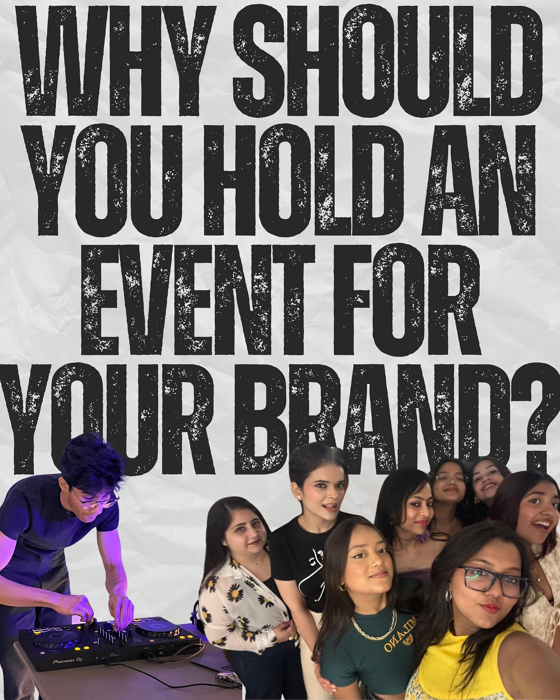
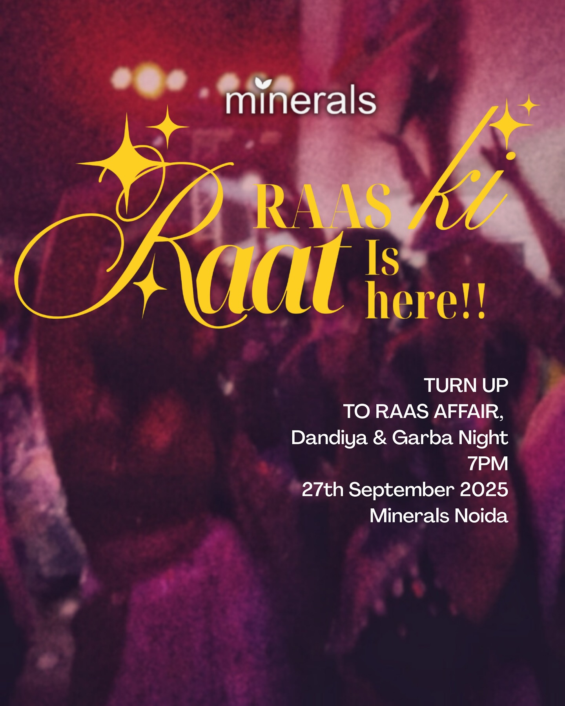
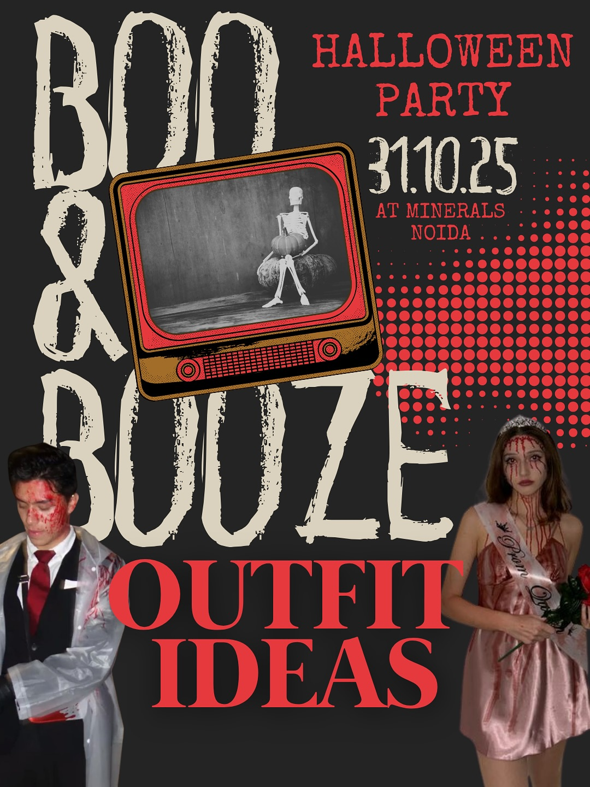
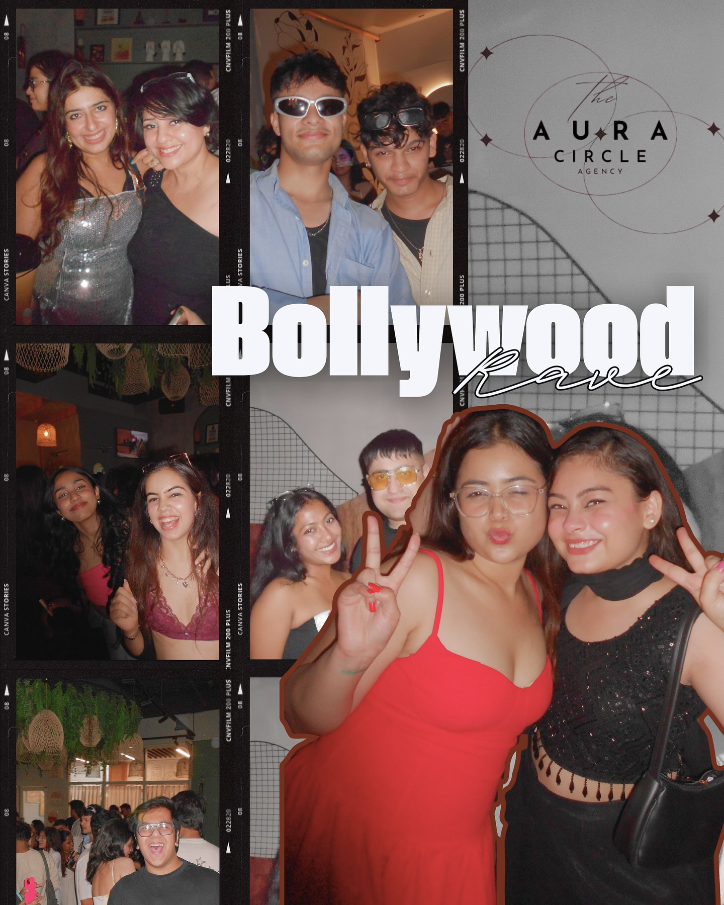

EVENT
AURA
Precision Planning • Extraordinary Execution
Moments & Memories

STRATEGIC
LAUNCHES
Making a statement from day one with architectural precision and digital impact. We design entries that command attention and define future narratives.

CURATED
PR EVENTS
Boutique gatherings for the city's tastemakers. Where every detail is a conversation starter and every interaction is meticulously curated.

IMMERSIVE
RETAIL
Transforming physical spaces into living brand manifestos. We create environments that blur the line between retail and art.

EXPERIENCE
CENTERS
Designing permanent and pop-up destinations that engage the senses. Where technology meets tactile storytelling.